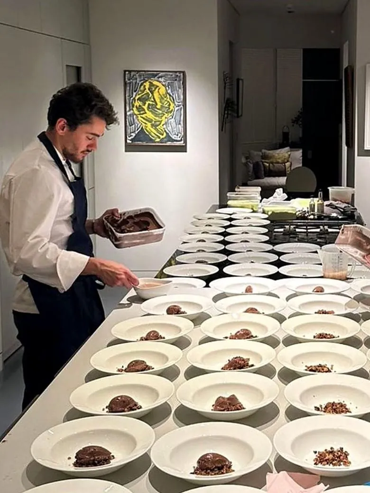
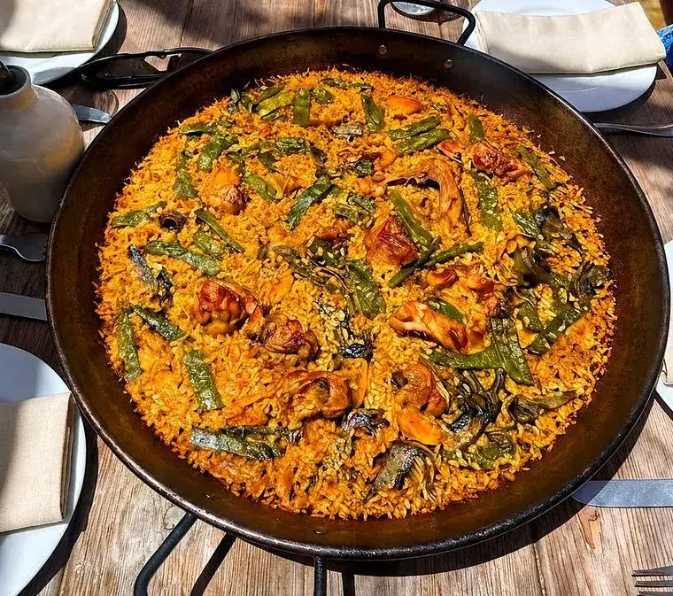

Spanish Heritage
Born in Spain, trained in Michelin kitchens, and still cooking the food he grew up with. This is the other side of Alejandro's table.

Where It All Started
Alejandro was born in Spain in 1998 and grew up around a table that was never quiet: family recipes passed down without measurements, Saturday mornings at the market, and a fierce belief that the best ingredient always wins. That upbringing took him to San Sebastián in the Basque Country, and eventually into Martín Berasategui's three-Michelin-star kitchen, where he learned precision and technique at the highest level.
But fine dining was never the whole story. The food that shaped him, paella straight from the pan, jamón sliced by hand, tomatoes still warm from the sun, is the food he still cooks today. It's this side of Spain, generous and unpolished, that he now brings to private tables across London and beyond.

A Different Way to Eat
Rather than a plated tasting menu, tapas and paella dining is built around the table: a spread of small plates to start, patatas bravas, jamón, croquetas, pan con tomate, gambas al ajillo, followed by paella cooked to order in front of your guests.
It's informal by design: ideal for gardens, larger groups, birthdays, or anything that calls for good food and easy conversation over a long, shared table rather than a formal service.
Ask About Tapas & Paella Dining
Paella, Cooked the Way It's Always Been
There's a reason paella is never eaten alone in Spain. It means the whole table together, one pan in the middle, everyone waiting for that first spoonful of socarrat, the crisp, caramelised rice at the bottom that separates the real thing from the rest.
Alejandro cooks it exactly the way it's cooked at home: slowly, with good rice, good stock, and no shortcuts. A Valenciana with chicken, a seafood arroz negro, or a lobster paella for something more special, it comes to the table the way it's meant to: unhurried, in the pan, and made for sharing. It's less a course than an occasion, the kind of long, easy table that makes a garden in London feel, just for an evening, like home.
Ask About the Paella Menu
Cocktails, Crafted to Order
Food is only half the evening. Our bartenders build a drinks menu to match, from a welcome cocktail on arrival to a full bar running through the night, personalised for your event.
Ask About the Drinks Menu